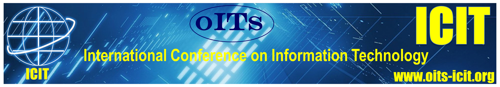

OITS was formed in 1997 (and registered in 1998) to promote information technology in the state of Orissa in the east coast of India.
147, Kanan Vihar HIG Colony, Patia, Bhubaneswar 751031.
The area of operation of the Society shall be whole of India. The Society can establish
branch office(s) anywhere in the state of Orissa or outside and expand the activities of the
Society.
For the purpose of this document, "Society" whenever and wherever mentioned hereafter
will mean Orissa Information Technology Society (OITS).
Prof R C Balabantaray, President
Prof S Champatiray, Vice President
Prof Niranjan Ray, Secretary
Prof P K Tripathy, Treasurer

This site is maintained by OITS personnel. Corrections/suggestions may be sent to email:odishaitsociety@gmail.com